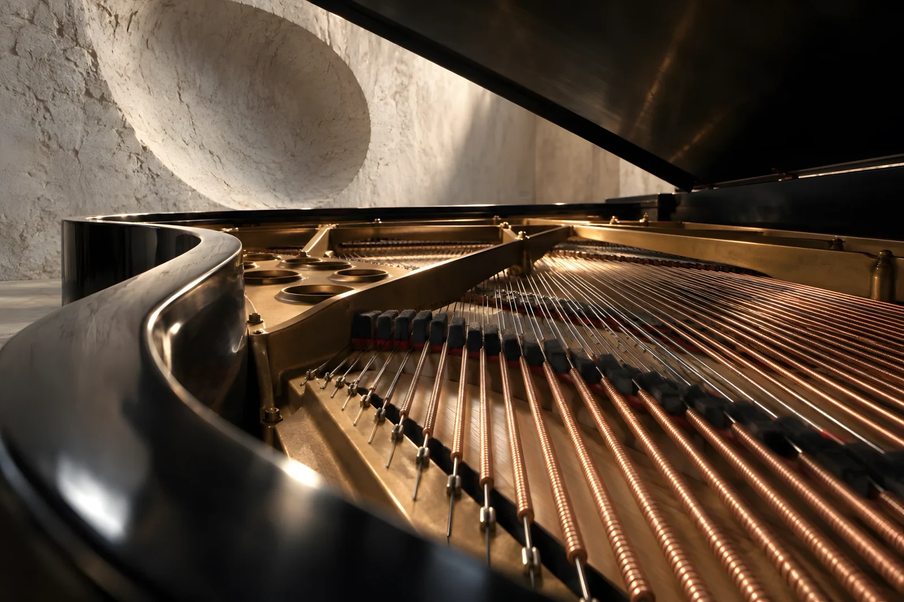
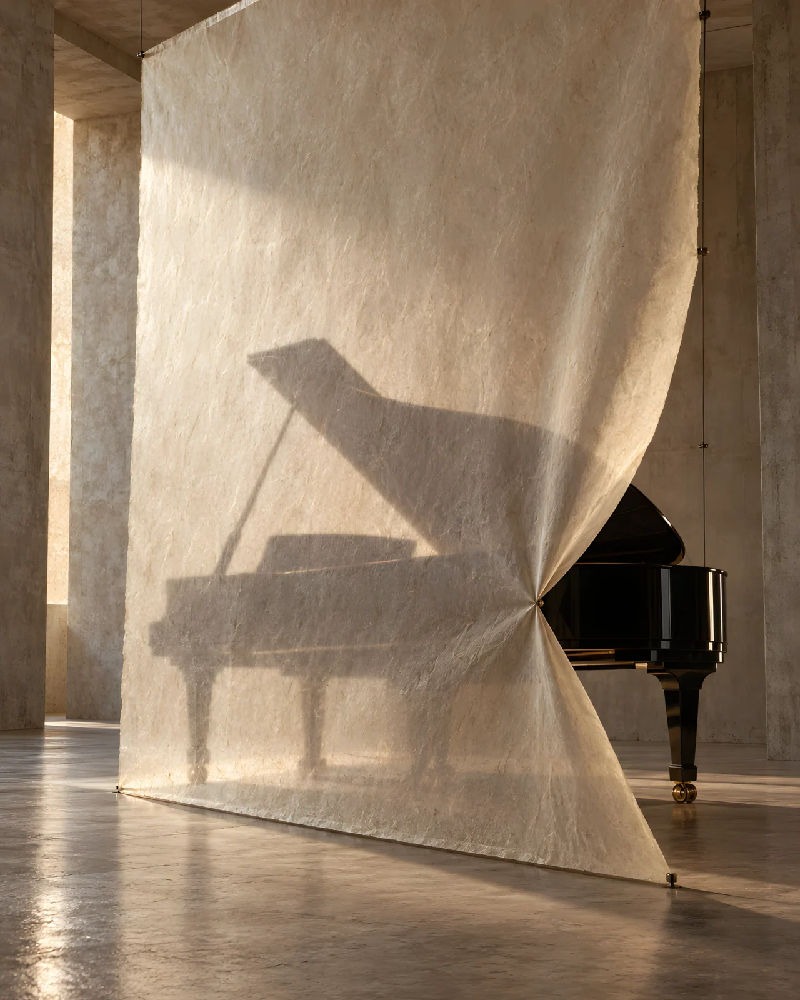

THE ROOM REMEMBERS
A Steinway Model D performance ends. The room keeps its shape.
The idea
A small human gesture becomes an immense physical afterimage. The sequence moves from a hovering finger and the instrument’s inner mechanism to a displaced paper membrane and, finally, a plaster chamber that seems to remember the sound. The piano itself stays intact; the world around it bears the trace.
Making the world
Ebony, felt, taut strings, fibrous paper and mineral plaster give each frame a different scale and texture. These AI-assisted visualisations propose a constructed installation, not a photographed performance. Model D mechanics, branding and proportions require licensed product review before commercial use; the 4K-class masters were enhanced from smaller generations.
The series

